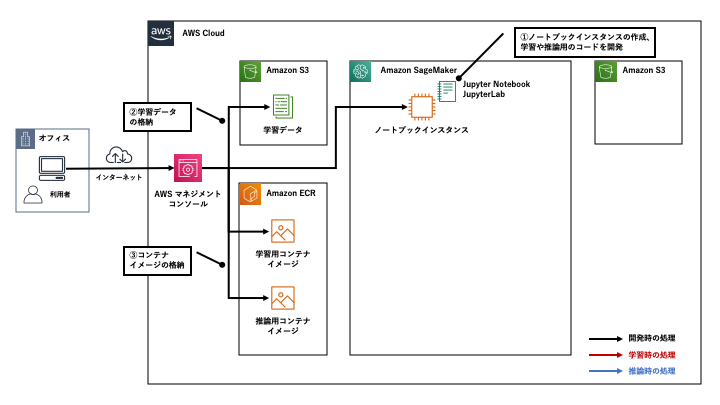

[第4回] ML サービスの全体像を把握する¶
はじめに¶
ML サービスで提供される機能とそれぞれの概要がわかる。
Amazon SageMaker の基本的な利用方法がわかる。
ML サービスとは¶
ML サービスの全体像¶
ML サービスは、3つのレイヤーで提供される機械学習サービスの中位に位置するサービスであり、下図の赤枠内のサービスです。

(出典：2019年12月12日開催 「AWS re:Invent 2019 re:Cap | AI/ML」 の資料より)
Amazon SageMaker Studio (Web ブラウザベースの統合開発環境 (IDE))
Amazon SageMaker Notebooks (Amazon SageMaker Studio に統合された完全マネージドなノートブック)
Amazon SageMaker Experiments (学習ジョブの実行履歴や設定、結果を一元管理)
Amazon SageMaker Debugger (学習の監視、記録、分析と異常の検知)
Amazon SageMaker Autopilot (AutoML 機能による機械学習モデルの自動構築)
Amazon SageMaker Model Monitor (本番環境にデプロイした推論エンドポイントの継続的な監視)
Amazon Augmented AI (A2I) (信頼性の低い推論結果の人間の確認と修正)
Amazon SageMaker とは¶
ここからは ML サービスの中心機能である Amazon SageMaker の概要や基本的な使い方について見ていきます。
Amazon SageMaker の概要¶
機械学習モデルを開発する際に発生しがちな問題・課題についていくつか例を見てみましょう。
機械学習モデルの開発における問題・課題¶
開発
開発環境の準備を行う。
機械学習アルゴリズムを選定し、学習や推論をするためのコードの開発を行う。
学習
学習 (機械学習モデルの構築) を行うための環境の準備を行う。
開発した学習用コードを使って学習を行う。
ビジネス上の要件を満たす精度となるまで学習と評価を繰り返す。
推論
推論 (学習済の機械学習モデルを利用した予測) を行うための環境の準備を行う。
アプリなど外部からのリクエストを受け付けるための接続ポイント (推論エンドポイント、API) を作成する。
機械学習モデルの精度や品質に関する継続的な監視を行う。
開発
PC などの開発環境の準備やコードの開発に必要なツール (Jupyter Notebook やフレームワークなど) のインストールや維持が必要である。
データサイエンティストや開発者が複数いる場合は人数分の対応が必要である。
学習
学習環境であるサーバの準備や必要なツール (フレームワークなど) のインストールや維持が必要である。
分散学習などのテクニックやいくつかのバリエーションでの学習を行う場合は、複数のインスタンスの起動や停止などの操作や管理が必要である。
学習のバリエーションが増えてくると、学習の設定値や精度の管理が大変になり、追跡できなくなる。
推論
学習済の機械学習モデルをデプロイして推論を行うためのサーバの準備が必要である。
利用者のアプリとデプロイした機械学習モデルの接続ポイントとなるエンドポイントの構築が必要である。
リクエスト数が増減に応じて、サーバを増減させてサービスの品質を保つ必要がある。
Amazon SageMaker で提供される機能¶
「開発」「学習」「推論」のための実行環境 (インスタンス) を提供する。
開発環境：ノートブックインスタンス
学習環境：学習用インスタンス
推論環境：推論用インスタンス
「開発」「学習」「推論」に必要なツールを提供する。
Jupyter Notebook/JupyterLab (ノートブックインスタンスにプリインストール)
人気の高い機械学習アルゴリズムや機械学習・深層学習フレームワークのコンテナイメージ
Amazon SageMaker SDK (Software Developer Kit) など
「開発」「学習」「推論」を便利に実行するための機能を提供する。
Amazon SageMaker SDK による学習の実行や学習済の機械学習モデルのデプロイ・ホスティング
複数の学習用インスタンスでの分散学習
推論用エンドポイント
推論用インスタンスのオートスケーリング など
API による他の AWS のサービスとの連携機能を提供する。
Amazon S3
Amazon ECR など
開発環境としてノートブックインスタンスのみを利用する
ノートブックインスタンスで開発し、複数の学習用インスタンスで分散学習を行った後にオンプレミスの環境で推論を行う など
Amazon SageMaker の基本的な使い方¶
登場するコンポーネントを抑える¶
{kind=link}
(Amazon SageMaker の利用において抑えるべきコンポーネント)
コンポーネント名 |
役割 |
|---|---|
学習のインプットとなる学習データやアウトプットとなる機械学習モデルを格納に利用するオブジェクトストレージ。 |
|
Amazon SageMaker では、学習と推論に Docker コンテナを利用する。
学習や推論に必要なコードやライブラリを Docker コンテナイメージとしてビルドしておき、学習用・推論用インスタンスでそれぞれ Docker コンテナとして実行する。
Amazon ECR は、それらを格納しておくための Docker コンテナイメージのレジストリ。
|
|
ノートブックインスタンス |
学習や推論用のコードの開発を行うためのインスタンス。
Jupyter Notebook もしくは JupyterLab を利用して開発を行う。
SDK を利用して、ここからから学習ジョブの起動や機械学習モデルのデプロイ・推論用エンドポイント (API) の作成を実施することができる。
|
学習用インスタンス |
学習用 Docker コンテナを稼働させるためのインスタンス。
学習ジョブの開始を契機に学習用インスタンスが自動で起動し、Amazon S3 と Amazon ECR から学習データとコンテナイメージをそれぞれダウンロードして、学習用コンテナの起動を行う。
学習の完了後に、学習済の機械学習モデルを Amazon S3 に格納し、自動で学習用インスタンスが削除されるため、余計なコストがかからない仕組みになっている。
|
推論用インスタンス |
推論用 Docker コンテナを稼働させるためのインスタンス。
デプロイ操作を契機に推論用インスタンスを起動し、Amazon S3 と Amazon ECR から学習済の機械学習モデルと推論用コンテナイメージをダウンロードして、推論用コンテナの起動を行う。
推論用エンドポイント (API) が作成され、これを経由してアプリなど外部からのリクエストを受け付けて推論結果を返す。
|
「開発」「学習」「推論」の処理の流れ¶
開発
{kind=link}
1. ノートブックインスタンスの作成を作成し、学習や推論用のコードを開発する。
2. Amazon S3 に学習データを格納する。
3. 学習、推論用のコンテナイメージを作成して格納する。
学習

4. ノートブックインスタンスから学習ジョブを起動すると、学習用インスタンスが自動作成される。
5. Amazon ECR からコンテナイメージをダウンロードして、学習用コンテナを起動する。
6. Amazon S3 から学習データをダウンロードして、学習を実行する。
7. 学習が完了したら、Amazon S3 に学習済の機械学習モデルを格納して、学習用インスタンスを自動削除する。
推論
{kind=link}
8. ノートブックインスタンスから推論用インスタンスの起動する。
9. Amazon ECR からコンテナイメージを、Amazon S3 から機械学習モデルをダウンロードしてコンテナを起動する。
10. 推論エンドポイントを作成し、アプリや他の AWS のサービスからアクセスする。
まとめ¶
商標、登録商標について¶
著者紹介¶

菊地 貴彰 (KIKUCHI Takaaki)
株式会社 NTT データ システム技術本部 デジタル技術部 Agile プロフェッショナル担当
大学・大学院では、機械学習を専攻。 ベイズ的枠組みを用いて、複数の遺伝子のデータから遺伝子どうしの相互作用ネットワークの推定に関する研究を行った。
株式会社NTTデータに入社後は、法人や金融のシステム開発のシステム基盤担当としてキャリアを積み、 現在はデジタル技術や Agile 開発を専門に扱う組織でシステム開発全般を担当する。 2019, 2020 APN AWS Top Engineers, Japan APN Ambassador 2020 に選出。
本連載の内容に対するご意見・ご質問は twitter: @kikuchitk7 まで。